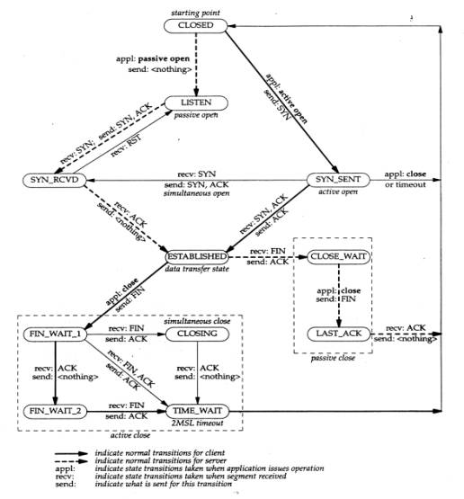
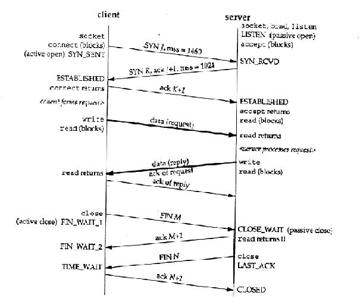

TCP가 어떤 과정을 거쳐 연결이 되고 종료가 되는지를 이해하고 있어야 한다. 지금 이 글을 보는 독자들이 시스템과 네트워크 관리를 해왔고 TCP-IP에 대해서는 어느정도 이해하고 있다는 가정하에 이야기를 계속 해 나가겠다. (여기에서 삼중 핸드쉐이크에 대해서 설명 해주길 바라지 말기 바란다. 이와 관련된 것은 TCP-IP 서적을 보기 바란다) 여기에서 연결 설정과 연결 종료에 관계하는 TCP 동작은 아래 그림을 참고하자. 타원은 상태를 나타내고 화살표는 패킷의 전이를 나타낸다. 상태 전이는 현 상태와 수신한 세그먼트에 의해서 정해진다. 정상적인 클라이언트의 전이는 굵은 실선으로 되어있고 정상적인 서버의 전이는 굵은 점선으로 표시되어있다. Send와 recv는 애플리케이션에서 어떤 패킷을 받고 보냈는지를 나타낸다.

(출처: UNIX NETWORK PROGRAMMING 2장 W.RICHARD STEVENS)

그림 4 TCP 연결에서의 패킷 교환(출처: UNIX NETWORK PROGRAMMING 2장 W.RICHARD STEVENS)
[출처] TCP 상태 전이도 / TCP 패킷 교환|작성자 차자바